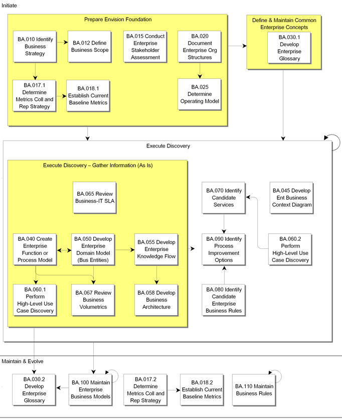

OUM |
Process Overview |
||
Method Navigation |
Current Page Navigation |
||
|
|
||||||||
The Enterprise Business Analysis process provides analysis of the enterprise-level requirements and sets up the business boundaries of the OUM project. It produces a set of requirements models of the enterprise, such as enterprise process models, domain models and use case models. It also provides other OUM processes with the initial information on the business requirements in the areas of architecture availability, data and information protection, and the operating policies and procedures.
 This process overview is written from the perspective of a Full Method View, utilizing ALL of the activities and tasks in this process. Therefore, all of the following sections provide comprehensive information. If your project is utilizing a tailored approach (for example, Technology Full Lifecycle View, Application Implementation View, Middleware Architecture View), not everything in this overview may be appropriate for your project. Please keep this in mind, especially when reviewing the Key Work Products and Tasks and Work Products sections. You should use OUM as a guideline for performing all types of information technology projects, but keep in mind that every project is different and that you need to adjust project activities according to each situation. Do not hesitate to add, remove, or rearrange tasks, but be sure to reflect these changes in your estimates and risk management planning. You should also consider the depth to which you address and complete each task based on the characteristics of your particular project or project increment. See Oracle's Full Lifecycle Method for Deploying Oracle-Based Business Solutions for further information on the scalability and adaptability of OUM.
This process overview is written from the perspective of a Full Method View, utilizing ALL of the activities and tasks in this process. Therefore, all of the following sections provide comprehensive information. If your project is utilizing a tailored approach (for example, Technology Full Lifecycle View, Application Implementation View, Middleware Architecture View), not everything in this overview may be appropriate for your project. Please keep this in mind, especially when reviewing the Key Work Products and Tasks and Work Products sections. You should use OUM as a guideline for performing all types of information technology projects, but keep in mind that every project is different and that you need to adjust project activities according to each situation. Do not hesitate to add, remove, or rearrange tasks, but be sure to reflect these changes in your estimates and risk management planning. You should also consider the depth to which you address and complete each task based on the characteristics of your particular project or project increment. See Oracle's Full Lifecycle Method for Deploying Oracle-Based Business Solutions for further information on the scalability and adaptability of OUM.
This process flow for this process follows:

This section is not yet available.
The tasks and work products for this process are as follows:
| ID | Task | Work Product |
|---|---|---|
Initiate Phase |
||
BA.010 |
Identify Business Strategy | Business Strategy |
BA.012 |
Define Business Scope | Business Scope |
BA.015 |
Conduct Enterprise Stakeholder Assessment | Enterprise Stakeholder Inventory |
BA.017.1 |
Determine Metrics Collection and Reporting Strategy | Metrics Collection and Reporting Strategy |
BA.018.1 |
Establish Current Baseline Metrics | Current Baseline Metrics |
BA.020 |
Document Enterprise Organization Structures | Enterprise Organization Structures |
BA.025 |
Determine Operating Model | Validated Operating Model |
BA.030.1 |
Develop Enterprise Glossary | Enterprise Glossary |
BA.040 |
Create Enterprise Function or Process Model | Function or Enterprise Process Model |
BA.045 |
Develop Enterprise Business Context Diagram | Enterprise Business Context Diagram |
BA.050 |
Develop Enterprise Domain Model (Business Entities) | Enterprise Domain Model |
BA.055 |
Develop Enterprise Knowledge Flow | Enterprise Knowledge Flow |
BA.058 |
Develop Business Architecture | Business Architecture |
BA.060.1 |
Perform High-Level Use Case Discovery | High-Level Use Cases |
BA.060.2 |
Perform High-Level Use Case Discovery | High-Level Use Cases |
BA.065 |
Review Busines IT SLA | Business-IT SLA Report |
BA.067 |
Review Business Volumetrics | Business Volumetrics Report |
BA.070 |
Identify Candidate Services | Service Portfolio - Candidate Services |
BA.080 |
Identify Candidate Enterprise Business Rules | Candidate Business Rules |
BA.090 |
Identify Process Improvement Options | Process Improvement Options |
Maintain and Evolve Phase |
||
BA.017.2 |
Determine Metrics Collection and Reporting Strategy | Metrics Collection and Reporting Strategy |
BA.018.2 |
Establish Current Baseline Metrics | Current Baseline Metrics |
BA.030.2 |
Develop Enterprise Glossary | Enterprise Glossary |
BA.100 |
Maintain Enterprise Business Models | Maintained Enterprise Business Models |
BA.110 |
Maintain Business Rules | Maintained Business Rules |
This section is not yet available.
This section is not yet available.
This section is not yet available.
This section is not yet available.

Copyright © 2006, 2016, Oracle and/or its affiliates. All rights reserved.